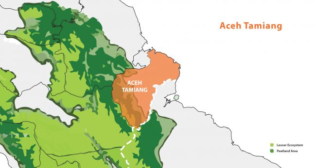

The Aceh Province contributes 5-10% of our total supply base. 87% of the Aceh-Leuser Ecosystem lies in the Aceh province. Even though Aceh is not a major producer of palm oil and has lower deforestation rates relative to other provinces, yet to the vocal critics of the industry, it is seen as being threatened by the expansion of agriculture, including oil palm.
We have established initiatives in Aceh to address the risk of encroachment into the Leuser Ecosystem. To understand the landscape further, we have since commissioned independent mill assessments across Aceh Tamiang, Timur, and Singkil. Additionally, we closely engage our third-party suppliers, independent smallholders, and stakeholders in three priority areas: Tamiang, Timur, and Singkil.
We have approximately 25 supplier mills located near the Leuser Ecosystem (Kawasan Ekosistem Leuser (KEL)). To address the gap between knowledge and action, we have developed tailored supplier engagement approaches from our experience. We reach out and assist our third-party suppliers, including the smallholders who supply to them and work towards sustainable production.
Progress report
For more information about our landscape projects in Aceh.
To see our 2020 report, click here.
TAMIANG
TIMUR
SINGKIL

Supplier engagement
PT Pati Sari
PT Pati Sari is located on the boundary of the Leuser ecosystem. In 2015, we worked with our supplier PT Pati Sari to better understand their supply base and procurement practices. We also ensured that they were complying with legal and operational requirements and conducted awareness and compliance training on our Sustainability Policy. Since 2018, we have engaged with independent smallholders supplying PT Pati Sari under our Extension Services Programme, which empowers our suppliers to engage their independent smallholders.
Independent smallholders
Extension Services Programme (ESP) to suppliers:
PT Pati Sari
As of September 2019, our team has provided training and support to 197 smallholders who supply to PT Pati Sari. The ESP curriculum includes improving market access, increasing yields through good agricultural practices, replanting efforts, and confirming the legality of their land titles.
External collaborations
We are integrating our project on PT Pati Sari and expanding our smallholder programs in Tamiang via a partnership with IDH (The Sustainable Trade Initiative), PepsiCo, Unilever, and other stakeholders, as both projects have overlapping focus areas. IDH has since signed a PPI (Production, Protection, Inclusion) Compact with the Government of Aceh Tamiang District, securing the government’s commitment to move Aceh Tamiang towards a sustainable commodity-producing region in Indonesia. Our collaboration with IDH also extends to Timur.
Also, together with industry peers and partners, we fund the Areas for Priority Transformation (APT) program spearheaded by the Earthworm Foundation. The goal of this program is to reduce deforestation and demonstrate to the world the feasibility of balancing commodity production, conservation as well as good social and labor practices at scale. The program focuses on three mutually reinforcing areas of work: integrated land use planning with government, NDPE (No Deforestation, No Peat and No Exploitation) support and training for industry, and intensive capacity building for communities on the forest frontier. The APT program has managed to secure an MoU (Memorandum of Understanding) with PT Semadam to protect its remaining forest and an MoU with the local government. The APT program also focuses on Southern Aceh, which houses Rawa Singkil Wildlife Reserve, south of the Leuser Ecosystem (see section ‘Singkil’ below). More here.